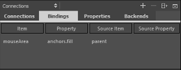

Adding Bindings Between Properties
To dynamically change the behavior of an object, you can create a binding between the properties of two objects. To create a property binding, a property is assigned a JavaScript expression that evaluates to the desired value. At its simplest, a binding may be a reference to another property. For example, the height of an object can be bound to the height of its parent, so that when the parent height changes, the object height is adjusted automatically.
For more information about the use of property bindings, see Property Binding.
You can create bindings between objects in the Connections view.

To bind a property of an object to the property of another object:
- In the Connections view, select the Bindings tab.
- Select the
 (Add) button to add a binding for the currently selected item. The ID is displayed in the Item column.
(Add) button to add a binding for the currently selected item. The ID is displayed in the Item column. - Double-click the value in the Property column to select the property to bind to a source property.
- Double-click the value in the Source Item column to select the object whose property you want to use to determine the behavior of the target object.
- Double-click the value in the Source Property column to select the property to bind the target property to.